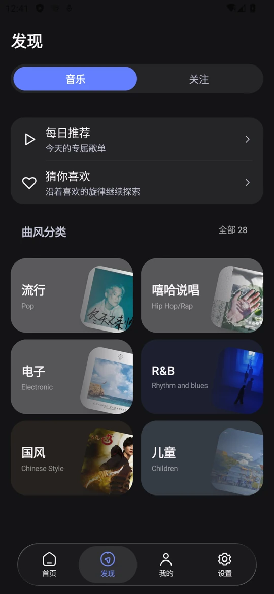
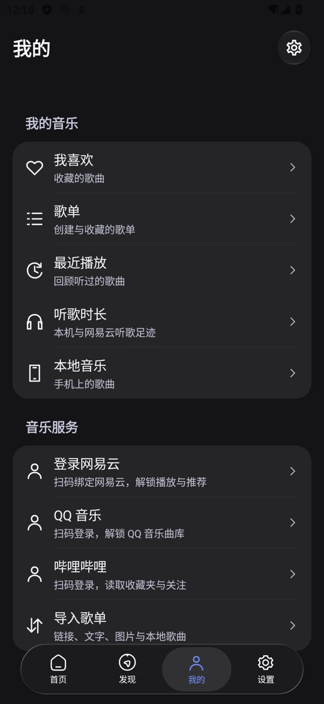
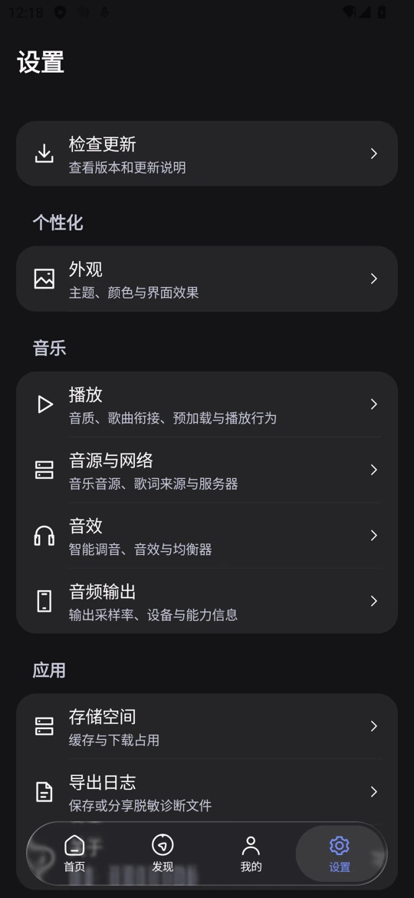

网易云音乐
账号、推荐与社交
我喜欢、每日推荐、逐字歌词、一起听与关注动态
原生账号绑定首页推荐、搜索、收藏、最近播放与每日推荐都跟随当前音乐来源切换。账号状态留在各自平台，PromX 只提供统一的播放层。
账号、推荐与社交
我喜欢、每日推荐、逐字歌词、一起听与关注动态
原生账号绑定收藏、推荐与视频
红心状态、最近播放、相似歌曲、往期日推与多线路 MV
独立登录链路视频与音频播放
收藏夹、关注动态、视频点赞与音频模式
按 BVID 同步自己的音乐服务器
Navidrome、Emby 与本地文件夹扫描
凭据只留在本机当前歌曲贯穿播放器、评论、MV、下载、队列与歌词管理。切换页面不会丢掉来源、收藏状态或播放进度。



每日推荐、猜你喜欢、私人 FM 与推荐歌单在同一视图中呈现。首页会根据当前来源重新加载，不把 QQ 音乐、网易云和哔哩哔哩的内容混在一起。
曲风、活动、关注和本地推荐共享一致的版式。切换来源时，关注列表、每日推荐和热门内容重新获取，不沿用上一来源的数据。
收藏动作会等待服务端确认，再更新界面。QQ 音乐、哔哩哔哩、网易云和私有服务分别处理自己的收藏语义，同时保留同一套操作路径。
较旧设备可以降低歌词渲染质量。播放缓冲、音频过渡、音效、输出采样率和外观效果也会根据设备能力逐项选择。
逐字动画、翻译、罗马音和副歌节奏光晕共用一条播放时间轴。沉浸罗马音可以暂时收起主字幕，让发音和翻译同时留在画面上。
moshi mo negai hitotsu dake
如果只能许下一个愿望
もしも願い一つだけ
评论层、收藏列表和歌曲菜单共享当前歌曲与来源，失败时给出明确结果。
两个人保持同一段播放位置，退出房间后个人播放状态保留。
蓝牙、USB、扬声器与耳机链路分别显示当前能力。
下载失败可重试，已完成的文件可以继续播放和分享。
音乐文件由来源平台提供，PromX 不托管曲库。
PromX 建立在 CurrentMusic、CurrentMusicX 与 Folia 等项目的长期工作之上。每个名字都连接到对应 GitHub 主页。
GitHub 项目TusanX / PromX1.6.15 稳定版 · versionCode 7400000
腾讯云分片下载，安装包约 63 MB。发布证书签名，下载后可在下载页校验 SHA-256。
把节奏和雨声一起收进前奏
12 条回复 · QQ 音乐这一段贝斯进入得太准了
已点赞 · 哔哩哔哩